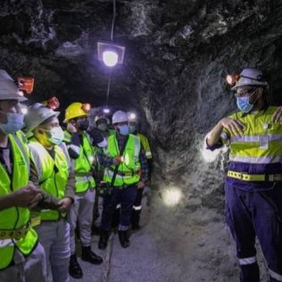
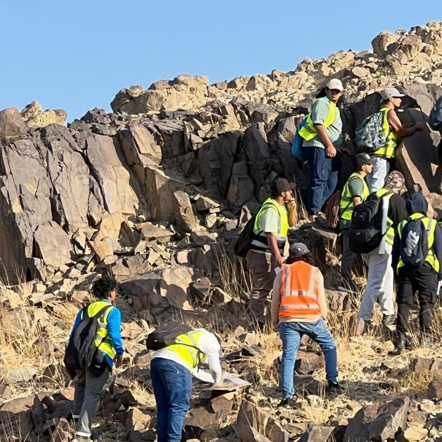
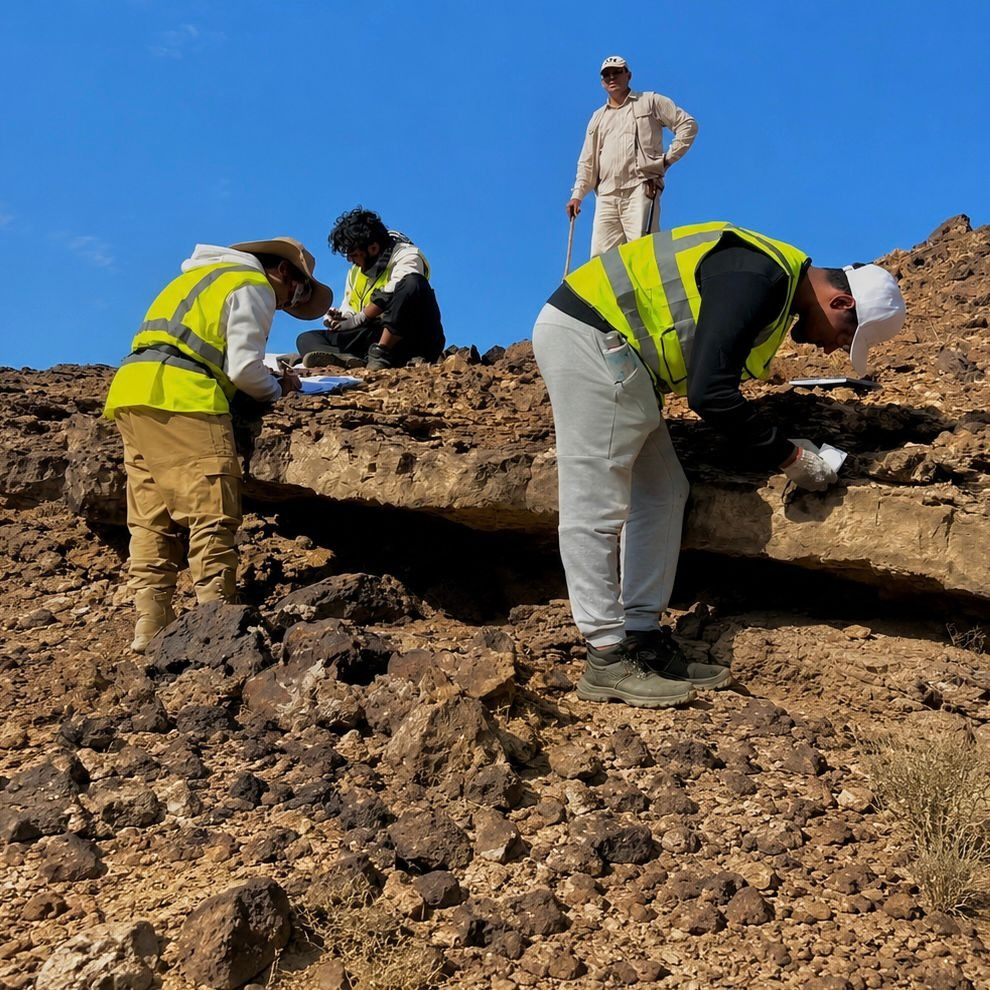
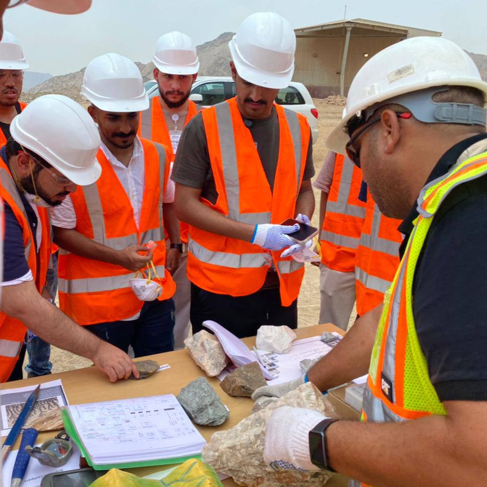

عن التعلّم الميداني
تُعد الرحلات والزيارات الميدانية من أهم وسائل التعلم العملي في كلية التعدين، إذ تتيح للطلاب الانتقال من دراسة المفاهيم النظرية داخل القاعات الدراسية إلى تطبيقها عمليًا في المواقع الجيولوجية والمناجم وبيئات العمل المختلفة. وتسهم هذه التجارب في تنمية مهارات الملاحظة والتحليل والعمل الميداني، وإكساب الطلاب الخبرات اللازمة لمسيرتهم المهنية في مجالات الجيولوجيا وهندسة التعدين.
أهمية التعلّم الميداني
ربط الجانب النظري بالتطبيق العملي.
دراسة الصخور والتراكيب الجيولوجية.
التعرّف على بيئات العمل التعدينية.
استخدام الأدوات والأجهزة المتخصصة.
جمع البيانات وتحليلها.
تنمية مهارات العمل الميداني.
التعرّف على إجراءات السلامة المهنية.
تعزيز العمل الجماعي والتواصل.
الرحلات والزيارات الميدانية
الرحلات الجيولوجية
الزيارات للمناجم
قد تتطلب بعض المقررات الدراسية رحلات أو زيارات ميدانية إضافية تُنظم حسب طبيعة المقرر وأهدافه الأكاديمية واحتياجاته التعليمية خلال الفصل الدراسي.
الأدوات الحقلية الجيولوجية

البوصلة الجيولوجية

النوتة الحقلية

المطرقة الجيولوجية

العدسة الجيولوجية

الخرائط الجيولوجية

جهاز تحديد المواقع (GPS)
متطلبات التعلّم الميداني
- إحضار الماء.
- الإلتزام بإحضار وارتداء سترة السلامة بلون ساطع.
- ارتداء أحذية السلامة الخاصة بالرحلات .
- توفر نظارات وقفازات السلامة .
- توفير النوتة الحقلية ذات الغلاف القاسي و كل ما يلزم لتسجيل الملاحظات .
- الالتزام بالحضور .
- المحافظة على المواقع الجيولوجية والبيئة.
- خوذة السلامة من المتطلبات الإضافية لطلاب هندسة التعدين أثناء الزيارات الميدانية للمناجم.
مقتطفات من التعلّم الميداني






تمنح الرحلات والزيارات الميدانية الطلاب فرصة التعلم المباشر واكتساب الخبرة العملية في مجالات الجيولوجيا والتعدين، من خلال التعرف على الصخور والخامات ومشاهدة العمليات التعدينية واستخدام الأدوات والخرائط، مما يجعلها من أكثر التجارب التعليمية تميزًا في كلية التعدين.